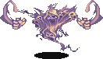
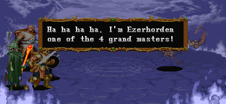
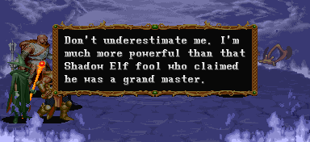
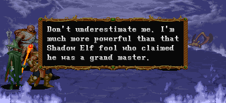
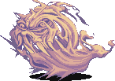
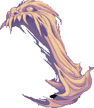
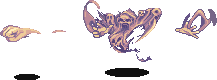

EZERHORDEN
|  투기장 (스테이지 10-3) 보스 '에저호든' |
기본 정보
클리어 시간 측정의 시작 시점
overture(스테이지 10-2)가 시작될 때 부터 최단 시간 클리어 기록
드워프 / 엘프 4:17 |
|||||||||
드랍 가능한 아이템 - 돈 + 점수 아이템 + 그외 아이템의 구성으로 떨어진다.
돈 : 5sp x3 + 1sp x3 (18sp) / 10sp x5 (50sp) / 50sp x3 (150sp) / 100sp x2 (200sp) / 500sp x1 (500sp)
기타 : 스크롤(scroll) 최대 8레벨
| 점수 아이템 : | |
| 반지류 : | |
| 도구류 : | |
| 완드류 : | |
에저호든은 스펙터(spectre)의 일종이다. 육체가 없어서 특별한 형태가 없는 언데드로 유령(ghost)과는 다른 존재다. 살아 생전의 감각은 유지하고 있지만 살아있는 모든 것에 대해 증오를 품고 있다. 그들의 흐릿한 형채에서 고통스러운 죽음의 흔적을 볼 수 있으며 그들이 머물던 곳에서는 죽음의 한기가 감돈다.
에너지 드레인을 통해 몸에 닿는 자의 생명을 흡수하며 스펙터에게 죽은 인간형 생물은 일시적으로 스펙터가 되어 조정 당하기도 한다. 또한 근처의 동물들을 패닉상태로 빠지게 만드는 오오라를 풍기는 등 만만치 않은 상대지만 태양 빛 아래에선 아무런 공격도 못하며 무기력 해 진다.
4천왕 중 한명으로 등장하며 이 게임상에서 가장 어려운 보스 세 손가락안에 들어갈 정도다. 상당히 까다로운 공격들만 하며 패턴도 종잡을 수가 없고 일반 공격으로 쓰러뜨릴 수 없고 LB오일이 통하지도 않기 때문이다. 라이트닝 볼트(반지 포함)가 가장 효과적이므로 이를 적극 활용해야 한다.
에너지 드레인을 통해 몸에 닿는 자의 생명을 흡수하며 스펙터에게 죽은 인간형 생물은 일시적으로 스펙터가 되어 조정 당하기도 한다. 또한 근처의 동물들을 패닉상태로 빠지게 만드는 오오라를 풍기는 등 만만치 않은 상대지만 태양 빛 아래에선 아무런 공격도 못하며 무기력 해 진다.
4천왕 중 한명으로 등장하며 이 게임상에서 가장 어려운 보스 세 손가락안에 들어갈 정도다. 상당히 까다로운 공격들만 하며 패턴도 종잡을 수가 없고 일반 공격으로 쓰러뜨릴 수 없고 LB오일이 통하지도 않기 때문이다. 라이트닝 볼트(반지 포함)가 가장 효과적이므로 이를 적극 활용해야 한다.
시작전 대사

"크하하하. 본인은 4천왕 중 한명인 에저호든이라고 한다."

"날 얒보지는 말게. 자기가 4천왕이라고 우기는 멍청이 셰도우 엘프 따위 보다는 훨씬 강하니까."
이 대사가 끝난 후 바로 싸움이 시작 된다.
"크하하하. 본인은 4천왕 중 한명인 에저호든이라고 한다."

"날 얒보지는 말게. 자기가 4천왕이라고 우기는 멍청이 셰도우 엘프 따위 보다는 훨씬 강하니까."
이 대사가 끝난 후 바로 싸움이 시작 된다.
클리어 시간과 보너스 xp에 대하여
만나고 나서 부터도 아닌 이전 스테이지(10-2 오버츄어)에서 부터 시간측정을 시작한다. 텔'아린과 싸우기 시작하면서 부터 시간이 흘러간다는 뜻이다. 그렇기 때문에 4분대의 기록을 내기가 전 보스 중 가장 힘들다. 만일 비밀 지하 수로(스테이지 9-C)를 거쳐와서 고블린과 놀들이 나오는 오버츄어를 거쳐왔다면 아예 시간보너스는 포기 해야 한다.
또한 정식 FINISH 보너스와는 별도로 마지막 공격을 명중시킨 플레이어는 80000xp를 얻는다.
FINISH를 받은 플레이어는 시간 보너스를 제외하고 총 160000xp를 얻는다는 뜻이다.
또한 정식 FINISH 보너스와는 별도로 마지막 공격을 명중시킨 플레이어는 80000xp를 얻는다.
FINISH를 받은 플레이어는 시간 보너스를 제외하고 총 160000xp를 얻는다는 뜻이다.
패턴 분석
| ※ 붉은색은 파이터가 입는 데미지, 푸른색은 매직 유저가 입는 데미지. 클레릭/드워프는 파이터에 가까운 데미지를, 시프/엘프는 매직 유저에 가까운 데미지를 입는다. |
|
| 물기 (28/39) | |
|  | 접근 해 있을 때 나오는 공격으로 순간 플레이어를 물어 버린다. 가드가 가능하지만 공격이 빠르게 나오기 때문에 예측을 하고 미리 가드하지 않는 한 피하기 어려운 공격이다. |
| 에너지 드레인 (33/33) | |
|  | 모션은 물기와 완전 같으나 이쪽은 플레이어를 추적해서 물어버린 후 한동안 씹어댄다. 가뜩이나 좁은 스테이지 안에서 쫓아오는 거리도 꽤 긴데다가 약간만 스쳐도 물리 정도로 판정도 넓으며 가드도 안되서 몇 안되는 에저호든의 공격 중 가장 위험한 공격이다. 게다가 다른 플레이어 캐릭터가 먹혔을 때 다른 플레이어가 화염의 검, 서리의 검, 폭풍의 검 이외의 무기로 공격을 명중시키면 먹힌 캐릭터 또한 데미지를 입는다. 피하려면 속성검이나 공격 주문으로 공격하거나 아니면 슬라이딩/대쉬로 피하는 수 밖에 없는데 스켈레톤이나 가고일이 은근히 방해될 것 이다. 가까운 거리에서 순간 이 공격이 나오면 피하긴 거의 힘들다고 봐야 할 것이다. 이 공격이 끝났다고 방심하지 말라. 곧바로 이 공격을 또 해올 수 있다. |
| 주먹 (19/29) | |
|  | 아무런 예고 없이 주먹을 날린다. 물기 위한 움직임을 보일 때를 빼면 그야말로 아무때나 불규칙하게 날아온다. 속도가 빠르진 않지만 자주 날아오는 대다가 예상치 못한 시기에 예상치 못한 궤도로 날아와서 맞기 쉬운 상당히 성가신 공격으로 그냥 눈으로 보고 재빨리 피하는 수 밖에 없다. 간혹 2연속으로 날아올 수도 있다. 그리고 맞으면 플레이어 캐릭터의 방향이 반대 방향으로 돌아가 버린다. 당해본 사람은 알겠지만 정말 절묘하게 날아오는 주먹은 한두번 맞다보면 입에서 무언가 나오게 할 정도이다. |
기타 특성
▶ 에저호든은 아무리 공격을 받아도 쓰러지지 않으며 공격이 명중하든 말든 자기 할 거 다하는 데다가 리치처럼 뒤로 밀려난다거나 하는 것도 없다. 그렇기 때문에 근접공격만으로 싸우는 건 무척 벅찬 일 이다.
▶ 간혹 때리다 보면 움찔 거리는 경우가 있다. 그런 경우 바로 에너지 드레인 2 공격이 날아오는 경우가 많아서 오히려 위험할 수 있다.
▶ 투척 무기 중 은단검과 은화살, 그리고 슬링만이 명중된다.
▶ 간혹 때리다 보면 움찔 거리는 경우가 있다. 그런 경우 바로 에너지 드레인 2 공격이 날아오는 경우가 많아서 오히려 위험할 수 있다.
▶ 투척 무기 중 은단검과 은화살, 그리고 슬링만이 명중된다.
지원군
붉은색 스켈레톤들이 나와서 지원공격을 하며 4인 플레이시 가고일까지 나온다.
1인 플레이시
최초에 스켈레톤이 둘 등장하며 한마리가 제거되면 새로운 한마리가 충원된다. 총 8마리가 나온다. 2인 플레이시
최초에 스켈레톤이 둘 등장하며 한마리가 제거되면 새로운 두마리가 충원된다. 총 16마리가 나온다. 3인 플레이시
최초에 스켈레톤이 둘 등장하며 두마리가 제거되면 새로운 세마리가 충원된다. 총 24마리가 나온다. 4인 플레이시
최초에 스켈레톤이 셋 등장하며 두마리가 제거되면 가고일 두마리가 등장한다. 화면상에 스켈레톤이나 가고일 중 한마리만 남으면 새로운 스켈레톤 세마리가 등장한다. 이런식으로 총 스켈레톤 24마리에 가고일 16마리가 나온다.
1인 플레이시
최초에 스켈레톤이 둘 등장하며 한마리가 제거되면 새로운 한마리가 충원된다. 총 8마리가 나온다. 2인 플레이시
최초에 스켈레톤이 둘 등장하며 한마리가 제거되면 새로운 두마리가 충원된다. 총 16마리가 나온다. 3인 플레이시
최초에 스켈레톤이 둘 등장하며 두마리가 제거되면 새로운 세마리가 충원된다. 총 24마리가 나온다. 4인 플레이시
최초에 스켈레톤이 셋 등장하며 두마리가 제거되면 가고일 두마리가 등장한다. 화면상에 스켈레톤이나 가고일 중 한마리만 남으면 새로운 스켈레톤 세마리가 등장한다. 이런식으로 총 스켈레톤 24마리에 가고일 16마리가 나온다.
공통 공략법
워낙에 패턴이 종잡을 수 없고 모든 공격이 상당히 위험하기 때문에 근접공격으로 싸우려면 정말 끔직한 경험을 할 수 밖에 없다. 라이트닝 볼트 혹은 라이트닝 볼트 반지로 먼거리에서 싸우는게 가장 좋다.
파이터/클레릭/시프/드워프의 라이트닝 볼트 반지와 엘프의 라이트닝 볼트가 2히트가 되기 때문에 많은 데미지를 줄 수 있다. 매직 유저의 경우 2히트가 나오진 않지만 위저드리 스태프가 있다면 충분히 강력한 데미지가 나온다. 스켈레톤이나 가고일과 겹쳐서 맞추면 더 많은 데미지를 줄 수 있으니 최대한 겹쳐서 맞추도록 노력하자.
※ 물기 위해 모습이 변하는 중이거나 막 물기 시작한 경우에는 명중이 되지 않는다는 점을 주의해야 한다.
만약 반지 갯수가 부족하다면 은단검과 은화살로 데미지를 보충 하도록 하자.
라이트닝 볼트 반지를 그냥 쓰면 데미지가 원하는 만큼 나오지 않는다. 부유성 입구 (스테이지 10-1)의 마지막 숨겨진 방에서 이어링을 얻을 수 있으니 라이트닝 볼트 반지를 쓰고자 하면 꼭 줏어오도록 한다.
레드 드래곤을 잡고 왔다는 전제하에 파이터/클레릭은 레벨 19이며 반지의 데미지는 36이고 시프는 레벨 20으로 반지의 데미지는 40, 드워프는 레벨 12로 데미지는 30이다. - 그래서 만약 2인 이상 플레이 중 이라면 시프 → 파이터/클레릭 순으로 라이트닝 볼트 반지를 몰아주는게 좋다. -
매직 유저의 라이트닝 볼트 데미지는 36이고 엘프의 데미지는 30이다. 아래는 장비 상황별 증가율 이다.
붉은 색의 경우 데미지 역전 현상₁이 일어나는 경우다. 매직 유저의 경우 3인 이상 플레이시 주의하도록 한다.
* 데미지 역전 현상₁: 데미지가 255가량을 넘어가면 원래 데미지 - 255 = 실제 데미지가 되어버린다.
파이터 / 클레릭 (레벨 19)
시프 (레벨 20)
드워프 (레벨 12) / 엘프 (레벨 10)
1히트 째는 엮인 숫자대로 가고 2히트 째는 +1이 된다. 예를 들어 20레벨 시프가 이어링만 착용하고 2마리를 엮어서 시전했다면 1히트 째는 76의 데미지가 나오지만 2히트 째는 100의 데미지가 나온다.
- 2히트가 되는 파이터/클레릭/시프/드워프의 라이트닝 볼트 반지와 엘프의 라이트닝 볼트에 해당 된다. 매직 유저 (레벨 19)
마력의 자팡이나 위저드리 스태프가 없다면 파이터/클레릭의 데미지와 같다.
매직 유저의 경우 각각 7회, 6회, 5회, 4회 시전해야 한다.
파이터/클레릭/시프/드워프의 라이트닝 볼트 반지와 엘프의 라이트닝 볼트가 2히트가 되기 때문에 많은 데미지를 줄 수 있다. 매직 유저의 경우 2히트가 나오진 않지만 위저드리 스태프가 있다면 충분히 강력한 데미지가 나온다. 스켈레톤이나 가고일과 겹쳐서 맞추면 더 많은 데미지를 줄 수 있으니 최대한 겹쳐서 맞추도록 노력하자.
※ 물기 위해 모습이 변하는 중이거나 막 물기 시작한 경우에는 명중이 되지 않는다는 점을 주의해야 한다.
만약 반지 갯수가 부족하다면 은단검과 은화살로 데미지를 보충 하도록 하자.
◎ 이어링의 입수
라이트닝 볼트 반지를 그냥 쓰면 데미지가 원하는 만큼 나오지 않는다. 부유성 입구 (스테이지 10-1)의 마지막 숨겨진 방에서 이어링을 얻을 수 있으니 라이트닝 볼트 반지를 쓰고자 하면 꼭 줏어오도록 한다.
◎ 라이트닝 볼트의 데미지
레드 드래곤을 잡고 왔다는 전제하에 파이터/클레릭은 레벨 19이며 반지의 데미지는 36이고 시프는 레벨 20으로 반지의 데미지는 40, 드워프는 레벨 12로 데미지는 30이다. - 그래서 만약 2인 이상 플레이 중 이라면 시프 → 파이터/클레릭 순으로 라이트닝 볼트 반지를 몰아주는게 좋다. -
매직 유저의 라이트닝 볼트 데미지는 36이고 엘프의 데미지는 30이다. 아래는 장비 상황별 증가율 이다.
| 엮이는 숫자 | 0 | 1 | 2 | 3 | 4 | 5 |
| 이어링 | 1.3배 | 1.5배 | 1.9배 | 2.3배 | 3.7배 | 4.6배 |
| 라이트닝 로드 + 이어링 | 1.4배 | 1.9배 | 2.5배 | 3.3배 | 4.3배 | 5.6배 |
| 엮이는 숫자 | 0 | 1 | 2 | 3 | 4 |
| 마력의 지팡이 + 이어링 | 1.5배 | 2.1배 | 3.4배 | 5배 | 0.4배 |
| 마력의 지팡이 + 라이트닝 로드 + 이어링 | 1.6배 | 2.6배 | 3.8배 | 6배 | 2배 |
| 위저드리 스태프 + 이어링 | 1.8배 | 3배 | 5.2배 | 2배 | 5.2배 |
| 위저드리 스태프 + 라이트닝 로드 + 이어링 | 1.9배 | 3.3배 | 6배 | 3.8배 | 6.7배 |
붉은 색의 경우 데미지 역전 현상₁이 일어나는 경우다. 매직 유저의 경우 3인 이상 플레이시 주의하도록 한다.
* 데미지 역전 현상₁: 데미지가 255가량을 넘어가면 원래 데미지 - 255 = 실제 데미지가 되어버린다.
클래스 별 실제 평균 데미지를 알아보자. (±10 정도의 차이가 있을 수 있다.)
파이터 / 클레릭 (레벨 19)
| 엮이는 숫자 | 0 | 1 | 2 | 3 | 4 | 5 |
| 이어링 | 46 | 54 | 68 | 82 | 133 | 165 |
| 라이트닝 로드 + 이어링 | 50 | 68 | 90 | 118 | 154 | 201 |
| 엮이는 숫자 | 0 | 1 | 2 | 3 | 4 | 5 |
| 이어링 | 52 | 60 | 76 | 92 | 148 | 184 |
| 라이트닝 로드 + 이어링 | 56 | 76 | 100 | 132 | 172 | 224 |
| 엮이는 숫자 | 0 | 1 | 2 | 3 | 4 | 5 |
| 이어링 | 39 | 45 | 57 | 81 | 111 | 138 |
| 라이트닝 로드 + 이어링 | 42 | 57 | 75 | 99 | 129 | 168 |
1히트 째는 엮인 숫자대로 가고 2히트 째는 +1이 된다. 예를 들어 20레벨 시프가 이어링만 착용하고 2마리를 엮어서 시전했다면 1히트 째는 76의 데미지가 나오지만 2히트 째는 100의 데미지가 나온다.
- 2히트가 되는 파이터/클레릭/시프/드워프의 라이트닝 볼트 반지와 엘프의 라이트닝 볼트에 해당 된다. 매직 유저 (레벨 19)
| 엮이는 숫자 | 0 | 1 | 2 | 3 | 4 |
| 마력의 지팡이 + 이어링 | 54 | 75 | 122 | 180 | 14 |
| 마력의 지팡이 + 라이트닝 로드 + 이어링 | 57 | 93 | 136 | 216 | 74 |
| 위저드리 스태프 + 이어링 | 64 | 108 | 187 | 72 | 189 |
| 위저드리 스태프 + 라이트닝 로드 + 이어링 | 68 | 118 | 216 | 137 | 241 |
1인 플레이시 끝낼 수 있는 반지의 최소 갯수(혹은 주문 횟수)를 나태내면 아래와 같다.
| 파이터 | 클레릭 | 시프 | 드워프 | 엘프 | |
| 이어링 | 5 | 5 | 5 | 7 | 7 |
| 라이트닝 로드 + 이어링 | 4 | 4 | 4 | 6 | 6 |
매직 유저의 경우 각각 7회, 6회, 5회, 4회 시전해야 한다.